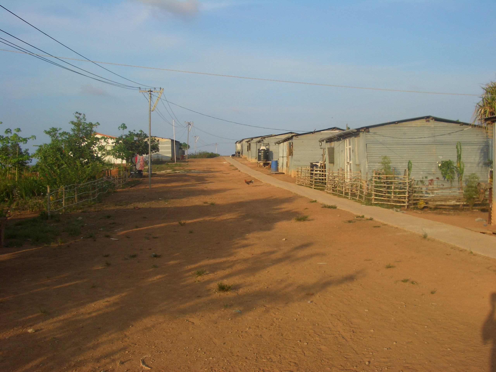

- Title Page
- Introduction
- The Islands and the Anthropologist
- Tsunami and First Response
- Wading In
- Second Tsunami
- In Search of Axes
- Steering a Sustainable Course
- Steering Committee
- Exchange Visit
- Nirnay Means Decision
- Up and Running
- Caritas Leans In
- Singh Sounds a Warning
- Midcourse Correction
- The SOPHIA Experiment
- Taking Stock
- SOPHIA Reports
Taking Stock
On July 5, 2007, the SIF Steering Committee convened for the sixth time in Vienna. It had not met for a year, and there was much to catch up on. In his field report, Singh reported that government reconstruction efforts were proceeding apace. Many Nicobarese had chosen to live in newly built houses supplied with electricity and running water. Mobile networks were expanding, and 685 hectares of land had been brought under coconut and cashew cultivation. Occasional vegetable gardens and banana plantations could also be seen in the islands. “A few” Nicobarese communities, like Jonathan’s band from Chowra, worked at such projects, but most were still in the thrall of tsunami aid, which had been extended. Slides of young men loafing, listening to the radio or lounging on sacks of rations illustrated Singh’s point.[74]
As for the SIF-sponsored projects, there was little to report, as all but the hostel had been suspended pending the training work with SOPHIA. Though the committee expressed concern about the annual cost per hostel student (€850) and the small number of beneficiaries (20), it approved support for another year. All were satisfied with SOPHIA’s progress so far, though Altenburg, the Caritas representative, said he hoped to see the focus change soon from building capacity in the NYA to creating positive outcomes in the community.[75]

© Simron Singh
Aid-funded housing for the islanders
Discussion then turned to financial and legal matters, which were concerning. The NYA was having difficulty with its registration as a tax-exempt organization; it needed to engage a chartered accountant for audit services, and SOPHIA felt the quotes received from a firm in Port Blair were too high. To everyone’s dismay, the NYA still did not have a FCRA permit, though some sort of provisional permit had been worked out for the hostel; SOPHIA hoped legislation pending in the Indian parliament might resolve the problem.
The committee felt it needed to take some sort of action in the meantime. After all, no SIF funds had been sent to the Nicobars in almost two years; meanwhile overhead costs were accumulating. By the end of 2006, SIF had disbursed only €34,054 for direct project costs (i.e., for the exchange visit, hostel, and co-op registrations) but had spent €50,119 on office costs in Vienna and personnel support. Another €20,135 had gone to direct costs in the first six months of 2007 (€12,521 for the SOPHIA interventions, the rest for the hostel) but overhead costs were still running at 52 percent of funds expended, a dismal performance measure.[76] To help remedy this situation, the committee approved a reduction in the hours of SIF’s project facilitator in Vienna from 20 hours a week to five.
In a separate action, the committee approved a new, three-year working budget, carrying SIF’s work forward, on paper at least, through 2010. The action was taken in part as an expression of confidence in SIF, and in part because the committee feared that “an intensive flow of money in the short term could not be properly handled by the NYA and would complicate the situation.” Altenburg, while agreeing in principle to extend SIF’s work, pointed out that Neighbor in Need would almost certainly object, as its money was earmarked for rehabilitation, not long-term development, and none of its contributed funds had been spent so far. Caritas had already extended its memorandum of understanding with Neighbor in Need several times; it would need to be approached carefully about delaying payout any longer.[77]
The committee agreed to postpone discussion of whether SIF was contributing to sustainability in the Nicobars until fall. By then, SIF would have SOPHIA’s final report. Everyone was holding their breath.
[74] Simron Jit Singh, “General Situation in the Nicobar Islands, March-April 2007,” op cit.
[75] Information in this section is taken from the notes and minutes for the 6Th SIF Steering Committee Meeting and the SOPHIA interim report, op. cit., unless otherwise noted.
[76] SIF, “Planned SIF-Budget to 2010” and “Detailed Budget for 2007 (Used and Planned),” presentations for 6th SIF Steering Committee Meeting, July 5, 2007, in SIF files.
[77] According to Matuschkowitz, Caritas typically set a three-year horizon on “long-term rehabilitation” projects, and SIF’s work in the Nicobars was fast approaching that mark, never mind the three-year extension. University money seemed to operate on “a different time cycle” than NGO money, Matuschkowitz observes, and came with fewer strings attached.